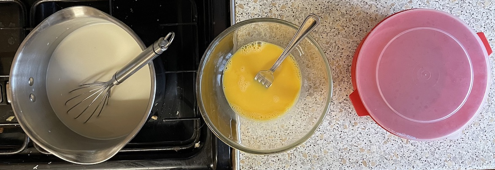

Iles flotant
Creme anglaise
- Warm until sugar dissolved
- 500ml milk
- 60g caster sugar
- 2 tsp vanilla extract
- 1 tsp cornflour mixed with 1 tbsp milk
- pinch salt
- Whisk together
- 4 egg yolks
- some of the milk
- Pour warm milk mixture over egg yolks whisking together
- Cook without boiling (84°C ideal), stirring constantly for 20 mins or until thick enough
- Pour into bowl and leave to cool, stirring to prevent skin forming
Meringue
- Whisk to soft peaks
- 4 egg whites
- 1 tsp white wine vinegar
- Add 1 tbsp at a time and whisk until stiff peaks
Iles
- Bring shallow wide pan of water with milk to simmer
- Add quenelles created with 2 dessert spoons
- Poach for 2 mins then flip and poach for 2 mins more
- Leave to cool on baking tray on kitchen towel
Serving
- 4 portions with 2 meringues each bowl
- roasted hazelnuts
- maple syrup
- caramel
- fruit compote / sauce
Notes
- try baking iles instead so not soggy
- custard ready when coats back of spoon
- reduced sugar from 120g
- Original recipe
Pics
